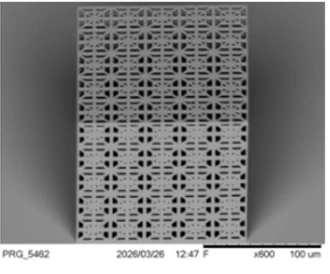
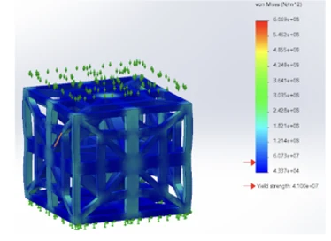
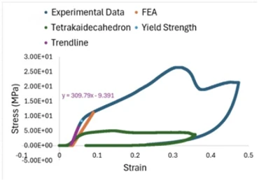
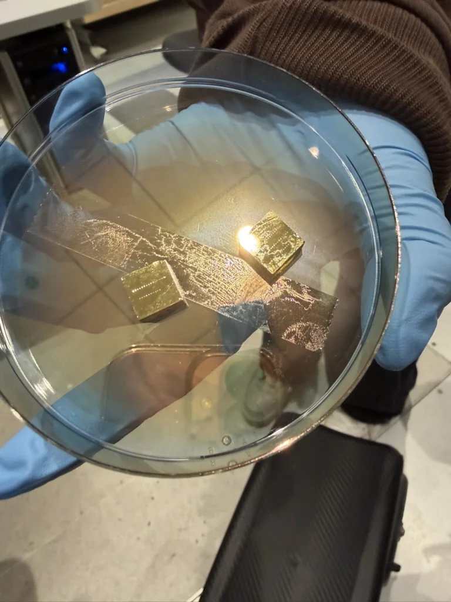
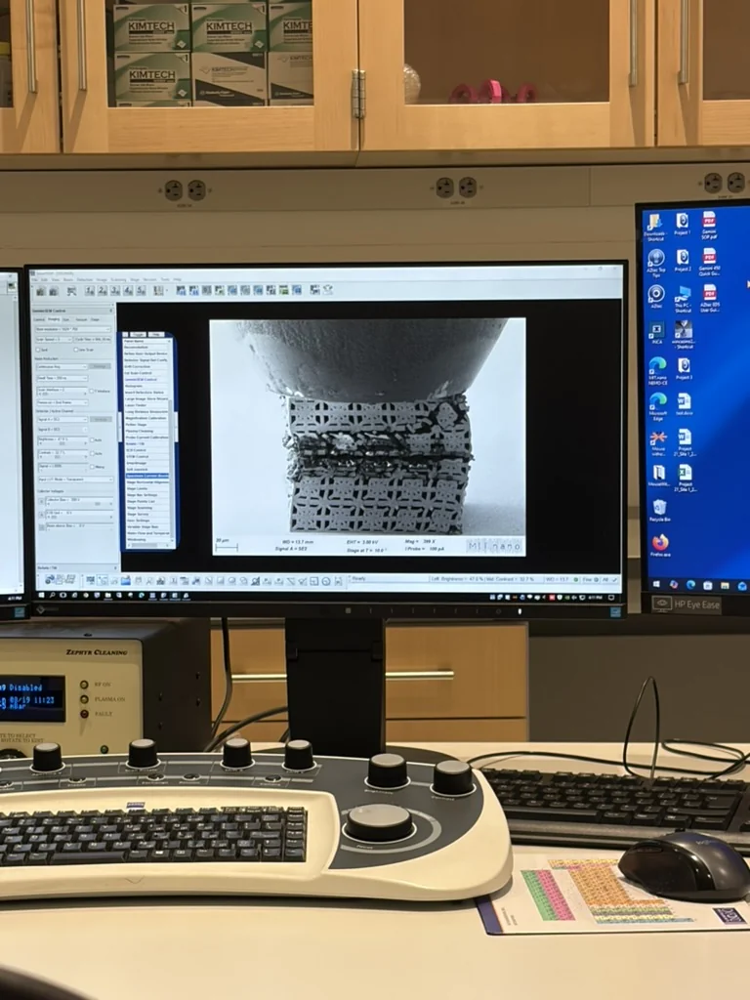

Designing a microstructured cube for compression
Using a braced lattice architecture to resist compression, then comparing modeling and physical test results.

Scanning electron micrograph of a small fabricated lattice cube before compression testing · Click image to enlarge
Design objective
For 2.002, my group designed a tiny lattice cube to withstand compressive loading. We wanted a geometry that was structurally efficient and able to support loads from different directions, rather than relying on a single unbraced path.
Geometry selection
Our team chose internal X-shaped bracing to support the center of the structure along multiple axes. We modeled the proposed architecture in CAD, examined its response using finite element analysis, and had the design fabricated by course teaching staff for physical testing.
Testing and results
The design performed very well in the class comparison, ranking fourth in strength. Compression and stress–strain measurements also exposed its weakness: the center of the structure buckled, limiting its maximum performance. We could compare this observed failure with our assumptions about where load would travel through the lattice.
Takeaway
This was an engaging example of why structure matters as much as material selection. The geometry worked well overall, but the local buckling behavior showed us where a later design iteration could be stronger.
Project imagery



